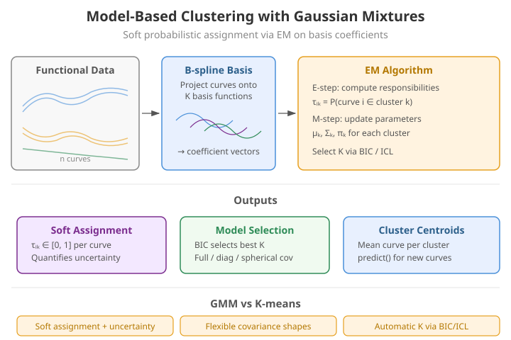
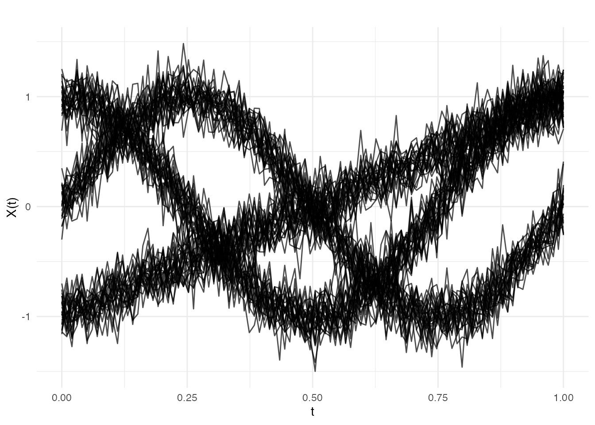
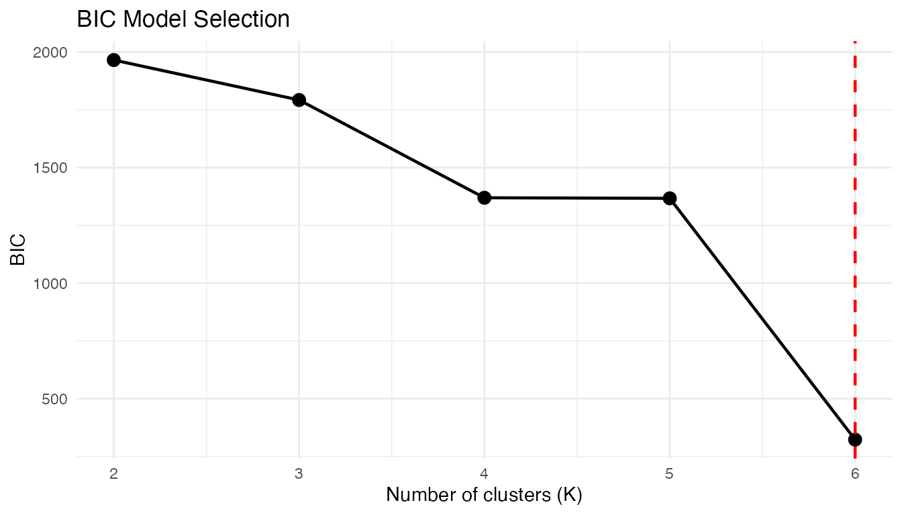

Model-Based Clustering with Gaussian Mixtures
Source:vignettes/articles/gmm-clustering.Rmd
gmm-clustering.RmdIntroduction
Gaussian Mixture Models (GMMs) provide model-based clustering with several advantages over k-means:
- Soft assignment: Each curve gets a probability of belonging to each cluster, not just a hard label.
- Automatic model selection: BIC or ICL criteria select the number of clusters.
- Flexible covariance: Full, diagonal, or spherical covariance structures adapt to cluster shapes.
fdars implements GMM clustering through
cluster.gmm(), which projects functional data onto a
B-spline basis before fitting the mixture model.

Why Model-Based Clustering?
K-means is a natural starting point for clustering, but it makes strong implicit assumptions:
- Spherical clusters. K-means minimizes within-cluster sum of squares, which treats all directions equally. It cannot adapt to elongated or correlated cluster shapes.
- Equal-size clusters. K-means assigns each point to its nearest centroid, effectively giving all clusters equal “pull” regardless of their size.
- Hard assignment. Each observation belongs to exactly one cluster, with no notion of uncertainty.
Gaussian mixture models relax all three assumptions by positing that the data arise from a mixture of Gaussian distributions, each with its own mean, covariance, and mixing weight. The EM algorithm provides:
- Soft (probabilistic) assignment: each observation gets a responsibility for each cluster, quantifying classification uncertainty.
- Adaptive cluster shapes: full covariance matrices capture correlations between features within each cluster.
- Principled model selection: information criteria (BIC, ICL) balance fit against complexity, selecting both the number of clusters and the covariance structure.
Mathematical Framework
Gaussian Mixture Model
A -component GMM models the density of the data as:
where:
- are the mixing weights with
- is the mean of component
- is the covariance of component
- is the multivariate Gaussian density
The log-likelihood for observations is:
Direct maximization is difficult because of the log-of-sum structure. The EM algorithm resolves this.
EM Algorithm
The Expectation-Maximization algorithm alternates between two steps:
E-step. Compute the responsibilities (posterior cluster probabilities):
Each is the probability that observation was generated by component , given the current parameter estimates.
M-step. Update parameters using the responsibilities as soft weights:
The algorithm iterates until convergence: . Each iteration is guaranteed to increase (or maintain) the log-likelihood, ensuring convergence to a local maximum.
Numerical stability. Computing involves exponentiating large negative values, which can underflow. The implementation uses the log-sum-exp trick: work in log space and subtract the maximum before exponentiating.
Initialization. EM is sensitive to starting values.
cluster.gmm() uses K-means++
initialization to obtain well-separated initial centroids,
which substantially reduces the chance of converging to a poor local
maximum.
Model Selection
BIC (Bayesian Information Criterion)
where is the number of free parameters. For a full-covariance GMM with components in dimensions:
accounting for covariance parameters, mean parameters, and 1 mixing weight per component, minus 1 for the sum-to-one constraint. Lower BIC is better.
ICL (Integrated Completed Likelihood)
ICL adds an entropy penalty that penalizes overlap between clusters. When responsibilities are crisp ( or ), the entropy term is small and ICL BIC. When clusters overlap heavily, the entropy is large and ICL penalizes more strongly, favoring fewer, better-separated clusters.
When BIC and ICL disagree: BIC tends to select more components (it is a better density estimator), while ICL tends to select fewer (it prioritizes well-separated clusters). If your goal is clustering, ICL is often more appropriate; if your goal is density estimation, prefer BIC.
From Curves to Features
cluster.gmm() does not operate on raw discretized
curves. Instead, it first projects each curve onto a B-spline
basis, producing a vector of basis coefficients
where
equals the number of basis functions (nbasis). This
step:
- Reduces dimensionality from grid points to basis coefficients (typically ).
- Imposes smoothness because B-splines are smooth by construction.
- Decorrelates (partially), since B-spline coefficients are less redundant than adjacent grid-point values.
The choice of nbasis controls how much curve detail is
retained. Too few basis functions smooth away cluster-distinguishing
features; too many inflate the dimensionality and slow convergence.
Simulated Data
set.seed(42)
n_per_cluster <- 25
m <- 100
t_grid <- seq(0, 1, length.out = m)
# Cluster 1: Sine curves
X1 <- matrix(0, n_per_cluster, m)
for (i in 1:n_per_cluster) {
X1[i, ] <- sin(2 * pi * t_grid) + rnorm(m, sd = 0.15)
}
# Cluster 2: Cosine curves
X2 <- matrix(0, n_per_cluster, m)
for (i in 1:n_per_cluster) {
X2[i, ] <- cos(2 * pi * t_grid) + rnorm(m, sd = 0.15)
}
# Cluster 3: Linear curves
X3 <- matrix(0, n_per_cluster, m)
for (i in 1:n_per_cluster) {
X3[i, ] <- 2 * t_grid - 1 + rnorm(m, sd = 0.15)
}
X <- rbind(X1, X2, X3)
true_clusters <- rep(1:3, each = n_per_cluster)
fd <- fdata(X, argvals = t_grid)
plot(fd)
The three clusters have visually distinct shapes: sinusoidal, cosinusoidal, and linear. The added noise () creates some overlap but the clusters remain well separated — an ideal scenario for GMM.
Fitting a GMM
cluster.gmm() searches over a range of k values and
selects the best model using BIC (default) or ICL.
gmm_fit <- cluster.gmm(fd, k.range = 2:6, seed = 123)
print(gmm_fit)
#> Gaussian Mixture Model Clustering
#> ==================================
#> Number of clusters: 6
#> Number of observations: 75
#> Criterion: BIC
#> BIC: 322.95
#> ICL: 322.95
#> Converged: TRUE
#> Covariance type: full
#> Basis: bspline ( 10 functions )
#>
#> Cluster sizes:
#>
#> 1 2 3 4 5 6
#> 16 14 21 9 9 6The selected should match the true number of clusters (3). The BIC values for will be worse because they cannot capture the three distinct shapes, and will be penalized for unnecessary parameters.
Model Selection: BIC Curve
The BIC values across candidate k help visualize model selection:
plot(gmm_fit)
A clear minimum (or elbow) at confirms the true structure. When the BIC curve is flat, the data may not have well-defined clusters, or multiple values of provide comparably good fits.
Soft vs Hard Assignment
Unlike k-means, GMM provides membership probabilities:
# Show membership for first 6 curves
head(round(gmm_fit$membership, 3))
#> [,1] [,2] [,3] [,4] [,5] [,6]
#> [1,] 1 0 0 0 0 0
#> [2,] 0 0 1 0 0 0
#> [3,] 0 0 0 1 0 0
#> [4,] 0 0 0 0 0 1
#> [5,] 0 0 1 0 0 0
#> [6,] 0 0 1 0 0 0
# Maximum membership gives hard assignment
cat("Hard clusters:", head(gmm_fit$cluster), "\n")
#> Hard clusters: 1 3 4 6 3 3Membership probabilities near 1 indicate confident assignment; values like indicate the curve sits between clusters. High-entropy observations are natural candidates for further investigation — they may be transitional curves, outliers, or evidence that the model needs refinement.
Comparison with K-Means
kmeans_fit <- cluster.kmeans(fd, ncl = 3, seed = 123)
cat("K-means WCSS:", round(kmeans_fit$tot.withinss, 2), "\n")
#> K-means WCSS: 1.63
cat("GMM BIC:", round(gmm_fit$bic, 2), "\n")
#> GMM BIC: 322.95
cat("GMM converged:", gmm_fit$converged, "\n")
#> GMM converged: TRUEK-means and GMM often agree on well-separated clusters. The key differences emerge when clusters have unequal sizes, non-spherical shapes, or overlapping boundaries — situations where GMM’s flexibility pays off.
Covariance Types
cluster.gmm() supports different covariance
structures:
-
"full"(default): Each cluster has its own full covariance matrix. -
"diagonal": Diagonal covariance (features are independent within clusters).
gmm_diag <- cluster.gmm(fd, k.range = 3, cov.type = "diagonal", seed = 123)
cat("Full GMM BIC:", round(gmm_fit$bic, 2), "\n")
#> Full GMM BIC: 322.95
cat("Diagonal GMM BIC:", round(gmm_diag$bic, 2), "\n")
#> Diagonal GMM BIC: 1729.75If the diagonal model achieves a comparable BIC, it suggests that the B-spline coefficients are approximately uncorrelated within clusters — a simpler model is adequate and will generalize better.
Predicting New Observations
Assign new curves to clusters using the fitted model:
# Generate new curves
set.seed(99)
X_new <- matrix(0, 3, m)
X_new[1, ] <- sin(2 * pi * t_grid) + rnorm(m, sd = 0.1) # Should be cluster 1
X_new[2, ] <- cos(2 * pi * t_grid) + rnorm(m, sd = 0.1) # Should be cluster 2
X_new[3, ] <- 2 * t_grid - 1 + rnorm(m, sd = 0.1) # Should be cluster 3
fd_new <- fdata(X_new, argvals = t_grid)
pred <- predict(gmm_fit, fd_new)
cat("Predicted clusters:", pred$cluster, "\n")
#> Predicted clusters: 2 2 2
cat("Membership probabilities:\n")
#> Membership probabilities:
print(round(pred$membership, 3))
#> [,1] [,2] [,3] [,4] [,5] [,6]
#> [1,] 0 1 0 0 0 0
#> [2,] 0 1 0 0 0 0
#> [3,] 0 1 0 0 0 0The membership probabilities for new curves should be highly concentrated on the correct cluster, since the test curves were generated with lower noise () than the training data.
BIC vs ICL
ICL (Integrated Completed Likelihood) penalizes cluster overlap more strongly than BIC:
gmm_icl <- cluster.gmm(fd, k.range = 2:6, criterion = "icl", seed = 123)
cat("BIC selected k:", gmm_fit$k, "\n")
#> BIC selected k: 6
cat("ICL selected k:", gmm_icl$k, "\n")
#> ICL selected k: 6When BIC and ICL agree, the clustering structure is unambiguous. When they disagree (ICL selects fewer clusters), it signals that some BIC-selected components overlap substantially and might be better interpreted as a single heterogeneous cluster.
References
- McLachlan, G.J. and Peel, D. (2000). Finite Mixture Models. Wiley.
- Fraley, C. and Raftery, A.E. (2002). Model-based clustering, discriminant analysis, and density estimation. Journal of the American Statistical Association, 97(458), 611–631.
- Jacques, J. and Preda, C. (2014). Functional data clustering: a survey. Advances in Data Analysis and Classification, 8(3), 231–255.
- Biernacki, C., Celeux, G., and Govaert, G. (2000). Assessing a mixture model for clustering with the integrated completed likelihood. IEEE Transactions on Pattern Analysis and Machine Intelligence, 22(7), 719–725.
See Also
-
vignette("articles/clustering")for k-means and fuzzy c-means -
vignette("articles/functional-classification")for supervised classification withfclassif()